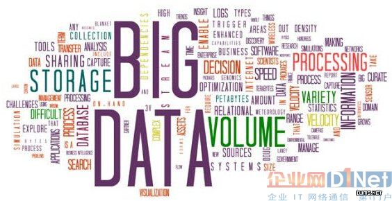

数据
数据由来
数据挖掘
数据挖掘（英语：Data mining），又译为资料探勘、数据采矿。它是数据库知识发现（英语：Knowledge-Discovery in Databases，简称：KDD)中的一个步骤。数据挖掘一般是指从大量的数据中通过算法搜索隐藏于其中信息的过程。数据挖掘通常与计算机科学有关，并通过统计、在线分析处理、情报检索、机器学习、专家系统（依靠过去的经验法则）和模式识别等诸多方法来实现上述目标。

数据可视化
数据可视化，是关于数据视觉表现形式的科学技术研究。其中，这种数据的视觉表现形式被定义为，一种以某种概要形式抽提出来的信息，包括相应信息单位的各种属性和变量。它是一个处于不断演变之中的概念，其边界在不断地扩大。主要指的是技术上较为高级的技术方法，而这些技术方法允许利用图形、图像处理、计算机视觉以及用户界面，通过表达、建模以及对立体、表面、属性以及动画的显示，对数据加以可视化解释。与立体建模之类的特殊技术方法相比，数据可视化所涵盖的技术方法要广泛得多。我们通过Echarts折线图、散点图、柱状图等多种图表格式将数据进行可视化表示。
本页最新更新时间： 2016年1月20日